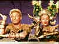

|
Any Day Danny Kaye
By Stu Kobak
"The vessel with the pestle has
the pellet with the poison and the chalice with the palace has the brew that is true," is the
mantra for survival that Danny Kaye bollixes up in one of the screen’s funniest comedies, The Court Jester. The comic’s magic with word patter and his very individual physical style are
in evidence in this 1956 spoof on golden era Hollywood swashbucklers. The Court Jester marks a departure from the
usual Kaye vehicle since more attention is paid to the plot line and most of the humor develops
through the interaction of the characters inhabiting this world. Many of Kaye’s previous movies
depend on the comic’s screen persona rather than using terrific scripting to develop the comedy. The Court Jester reigns regally as the crown jewel of Kaye’s film output. From his feature film
debut in the silly musical comedy Up in Arms to his final feature appearance in the made
for television drama Skokie, Danny Kaye brought a likable explosiveness to the screen. swashbucklers. The Court Jester marks a departure from the
usual Kaye vehicle since more attention is paid to the plot line and most of the humor develops
through the interaction of the characters inhabiting this world. Many of Kaye’s previous movies
depend on the comic’s screen persona rather than using terrific scripting to develop the comedy. The Court Jester reigns regally as the crown jewel of Kaye’s film output. From his feature film
debut in the silly musical comedy Up in Arms to his final feature appearance in the made
for television drama Skokie, Danny Kaye brought a likable explosiveness to the screen.
Kaye, born David Daniel Kaminski in 1913, displayed a flair for the
theatrical even before he reached his fifth birthday. By the time he was sixteen, the redheaded
mimic with the rubber face had turned professional. The unique comedy of Danny Kaye, cultivated in
the hot house of Catskill comic traditions, owes more to the situational histrionics of burlesque
than the stand-up comedy of jokesters like Bob Hope. Kaye’s extraordinary physical grace
embellishes his madcap meandering to another level. Cap it off with Kaye’s gifted singing and the
result is a performer that often surprises audiences with his range of performance.
Describing the comedy of Danny Kaye isn’t the easiest chore. Often it’s
a love him/hate him schism. There are those who can’t stand his silliness, others find his
mild-mannered pose offensive, while still others can’t abide his break-out into song and his
dancing drives ballet haters to quick exits. But the variety in Kaye’s act is the great strength.
Think of Kaye in terms of The Marx Brothers rolled into one. His patter songs invariably remind me
of Groucho. While the edge in Groucho’s rendition of "Hurray for Captain Spaulding" may
be more sexually accented than Kaye’s "Outfox the Fox," there’s no denying the
lineage. And can you watch Kaye’s antics without thinking of Harpo’s silent madcap shenanigans?
In every Marx Brothers film there’s a break in the comic mayhem for a production number featuring
the vocals of romantic crooner. Kaye supplies his own crooning and is even part of the chorus in
his production numbers. Think his fabulous "Bali Boogie" from  Wonder Man or The Lobby Number from Up in Arms.
Buster, the night club entertainer in Wonder Man may have learned a thing or two from Chico or any
of the Marx Brothers in his pursuit of blondes, and his innocent touches of blandness are a nod to
the fourth Marx Brother, Zeppo. Are you getting a picture of Danny Kaye’s talent?
How about Martin and Lewis? There’s a comic team designed to compliment
each other. When you had as much of Lewis’s infantile comedy as you could stand, Martin would
burst into song. When you had enough of Kaye’s infantile zaniness, he would burst into song.
But there was lots more control in Kaye’s fits of dizziness. It often seemed that Lewis could not
contain himself.
One of the pleasures of Kaye’s comedy is that it is never nasty or
hurtful. Even at its extreme, playing a ventriloquist with out of control dummies in the 1954 Knock
on Wood, the gentle nature of the comic is the dominent force. Like many of our funniest
screen actors, Kaye loved mistaken identity and multiple screen characters.
The
Secret Life of Walter Mitty was a field day for him, playing seven different incarnations
of Mitty. Kaye almost invariably played scatterbrained characters. In Up in Arms he was
hypochondriac Danny Weems, a misfit as an Army draftee. The following year it was the dual roles of
Wonder Man and in 1946 Kaye was a shy milkman
who discovers he has a knock-out punch in the boxing ring in the remake of Harold Lloyd’s The
Milky Way, The Kid from Brooklyn. Mitty premiered in 1947 and the following year
Howard Hawks directed Kaye in a remake of his own Ball of Fire. Re-titled A Song is
Born, the script is a perfect vehicle for Kaye playing a mild-mannered music scholar
captivated by a beautiful night club singer. Elements of Wonder
Man are in evidence as mild-mannered Kaye battles against big time gangsters. The
Inspector General(1949) is another opportunity for comic madness as Kaye plays a village
buffoon who impersonates an important government functionary. Kaye relishes those screen
opportunities for mistaken identity and makes the most of here. Danny does dual roles in the 1951 On
the Riviera, playing a night club entertainer and a French military hero. The settings and the
female co-stars, Gene Tierney and Corinne Calvet add a measure of zest to Kaye’s zing.
Hans
Christian Andersen was 1952’s Kaye entry and while
there’s no denying the sweetness Kaye projects as the story-teller, his comic range is rather
restrained and those moments when he’s off-screen are painfully boring. In addition to Knock
on Wood in 1954, Kaye was a late substitute for Fred Astaire in White Christmas, the
follow-up with Bing Crosby to Holiday Inn. While Kaye acquits himself admirably, the role
does not take full advantage of the comic’s abilities.
Yet, the range of characters that Kaye played was limited and elements in
all the characters repeat themselves, depending heavily on the of the Kaye’s Catskills comedy
origins. From the 1944 Up in Arms through 1956's The Court Jester, Kaye’s magic
survived on the screen, but audiences began to tire of the similarity of characterization. The
Court Jester, arguably Kaye’s best film and a critical success, was a dismal box office
failure. It was pretty much down hill for Kaye’s movie career after The Court Jester. In
1958 Danny starred as a mild-mannered schoolteacher in love with a circus performer in Merry
Andrew. It was lukewarm Kaye, never reaching the insanity of earlier pictures. The last of Kaye’s
screen comedies include On the Double in 1961, which comes closest to vintage Kaye of the
later films, but still lacks the consistency of energy. The Man from the Diners Club, the
final Kaye screen comedy, falls flat on its pratfalls suffering from a poor script and an
unenthusiastic Kaye performance.
A frequent observation about comics is they all want to be serious actors.
Kaye has had his dramatic flings in the aforementioned Skokie, in Me and the
Colonel, an off-beat
drama about a Jewish businessman trying to escape the Nazis and The Madwoman of Chaillot,
from Jean Giraudoux’s play. Madwoman featured a high profile ensemble cast, the first time that
Kaye was not center stage for most of the movie. Kaye’s most successful attempt at drama was The
Five Pennies, a biographical film about jazzman Red Nichols. The 1959 film suffers from an
inconsistency of tone. In many ways, Kaye seems like he’s playing two different roles in the two
distinct sections of the movie.
Elements of Kaye’s screen persona were reflected in his life. The comic’s
involvement as a spokesman for UNICEF fits perfectly with the sweet image he portrayed on the
screen. Just as the children in Hans
Christian Andersen gathered around to watch him perform, children around the world were
treated to Kaye’s presence in an effort to raise the standard of life for children everywhere.
The fey side of Danny Kaye is captured by the persistent rumors of a homosexual relationship with
Sir Laurence Olivier. There’s a story that Kaye once met Olivier at Kennedy airport disguised as
a Customs Agent and took him into a secluded room for a strip search before divulging his true
identity. On the flip side, for a number of years in the forties, Kaye engaged in a not-too-subtle
affair with actress Eve Arden. Acknowledged as a gourmet chef, Kaye also tried his hand at
conducting the New York Philharmonic Orchestra. Kaye reluctantly was a late entry into the
television variety sweepstakes for a few years and even did a relatively successful return to
Broadway playing Noah in the 1971 Richard Rogers musical Two by Two.
But Kaye must be best remembered for those film comedies. Blazing across
movie screens for a solid decade of hilarity, Kaye’s fantastic energy was communicated to
audiences. For me, it’s always been any day Danny Kaye.
HBO has recently released three splendid DVDs of Danny Kaye movies, The Secret Life of Walter Mitty, Wonder Man, and Hans Christian Andersen. The Court
Jester is available in a splendid widescreen DVD presentation from Paramount. A Song is Born and Up in Arms and The Kid from Brooklyn
have all seen laser releases. |
|
|
|

The
Movie Poster Archive includes extensive poster images from the films of stars like Susan Hayward,
Kirk Douglas, Katharine Hepburn and many more. Our featured star is Lana Turner.

The Feature Archive
has articles ranging from Akira
Kurosawa to Blonde Bimbos.
Movie Rage: Death in the Aisles
Everyone knows what it feels like to get angry at the
movies these days. Here's a humorous but not so delightful view of big screen misery.
Gotta
Dance
Fred and Ginger tapped their way into the hearts of movie fans everywhere. Stu Kobak takes a look at some of those dance
movies that gifted audiences toe-tapping pleasure. Click on the image to get in on the beat.
Puttin on the
Ritz

Fred Astaire and Cyd Charisse bring Silk Stockings to life, a remake of Ninotchka, one of many
films successfully turned into musicals by the Hollywood dream factory. Read all about remakes into
musicals by clicking on the divine dancers.
Sturges Emerges
Preston Sturges was Hollywood's resident comic genius for more than a decade. His movies are
timeless. Click on his image to read all about it.

Is North by Northwest Hollywood's definitive exploration of the nose? From schnozzles to
beezeers, film mavens make the most of the foremost. Click on Mount Hitchcock for more.
 
DVDPlanet is the DVD
incarnation of legendary laser retailer Ken Crane's. Deep discounts and serious service.
 
The Big Combo has
style to spare in reviewing films and producing feature articles. Check out their special
"Lingo" section.

Reviews of affordable remote controls in the market place. Codes
and tips as well.

Looking for information about widescreen movies and hardware. The Widescreen Movie Center
is the place to go.

The National Film Preservation Foundation (NFPF) is the nonprofit organization created by the U.S. Congress to save
America's film heritage.

News, information, features about current films in theaters and in the
pipeline. Easy to use interface.

The official site for information about the great comic director. A treat for connoisseurs of
classic Hollywood madcap.
Take a look at the merry images of America's gift to
the movies: Hollywood Musical Posters are featured from The Movie
Poster Archive. |